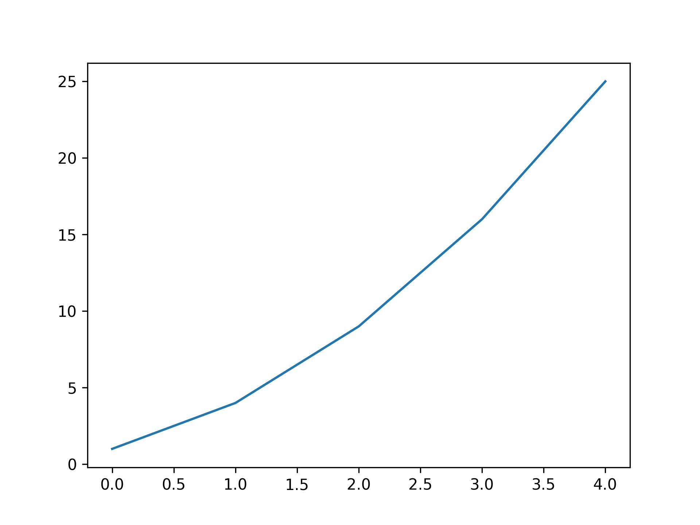
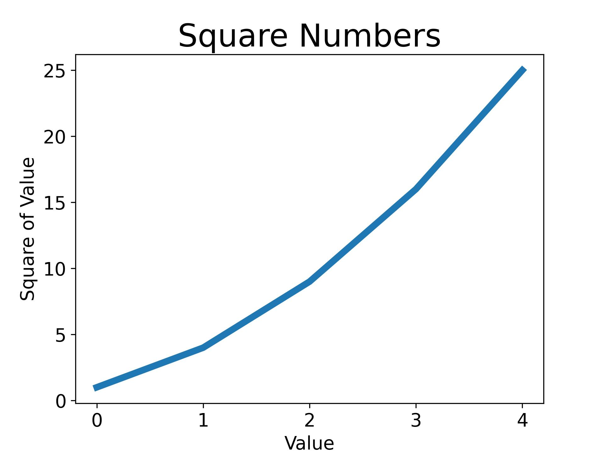
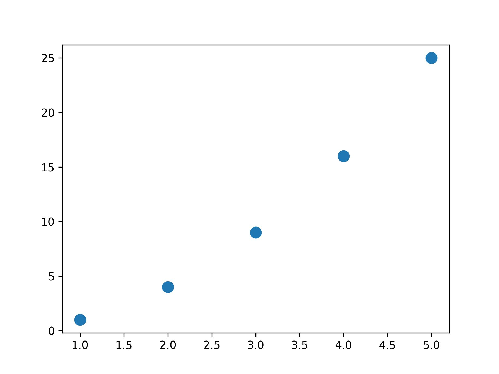
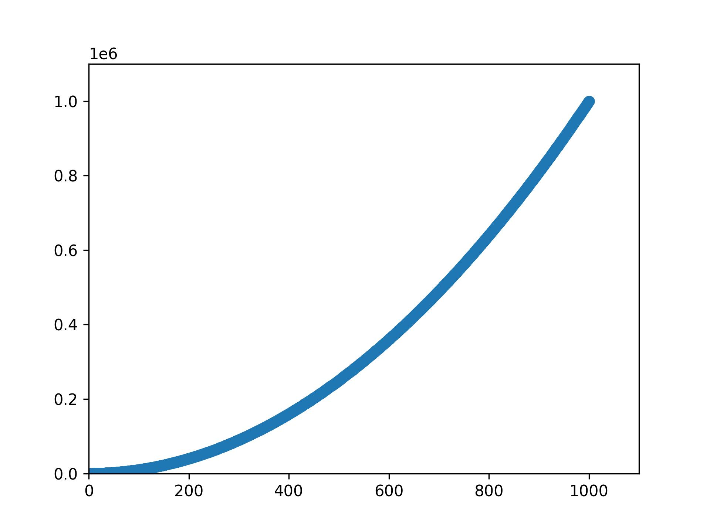
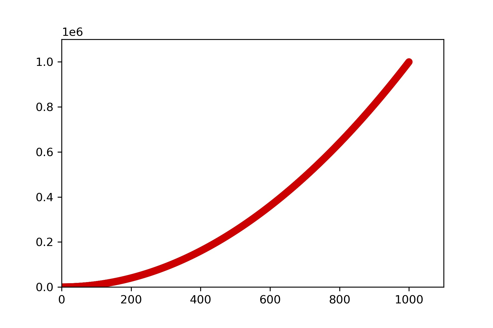
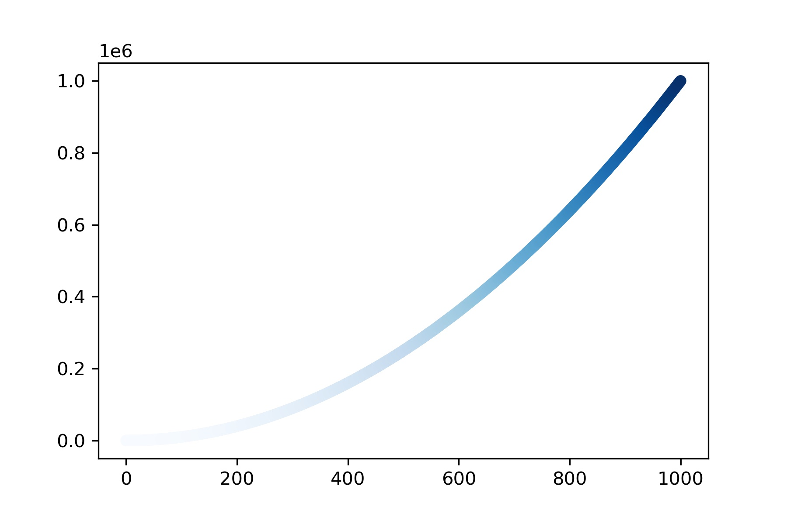
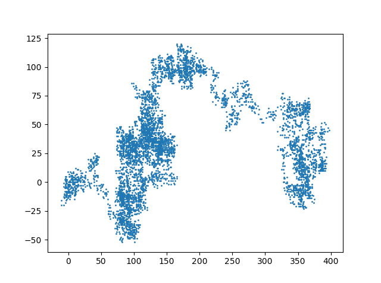
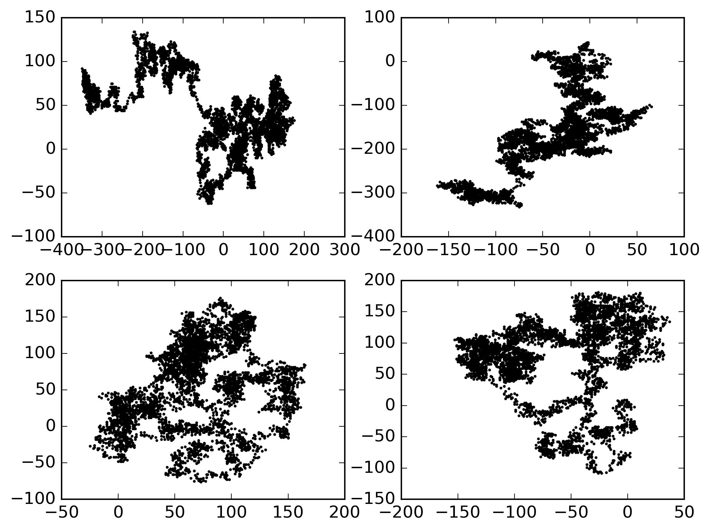
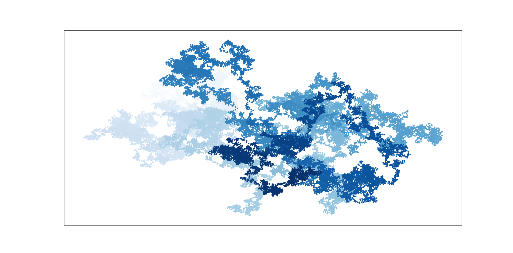

Python Programming
Lecture 11 Data Visualization
11.1 Matplotlib Basics
从 Spyder 到 VS Code + Jupyter
- 前面的 Python 基础部分，我们使用的是 Spyder：
- 界面简单
- 适合初学者
- 方便练习基础语法
- 更接近传统编程方式
- 但 VS Code + Jupyter 形式会更加适合数据分析，因为我们需要：
- 查看数据表格
- 分步运行代码
- 即时显示图表
- 使用 AI 辅助编程
The matplotlib Gallery
Plotting a Simple Line Graph
import matplotlib.pyplot as plt
squares = [1, 4, 9, 16, 25]
fig, ax= plt.subplots()
ax.plot(squares)
# plt.show()
plt.savefig('simple.jpg',dpi=300)
# 不要在plt.savefig()之前使用plt.show()，否则会保存失败

Changing the Label Type and Graph Thickness
import matplotlib.pyplot as plt
squares = [1, 4, 9, 16, 25]
fig, ax= plt.subplots()
ax.plot(squares, linewidth=5)
# Set chart title and label axes.
ax.set_title("Square Numbers", fontsize=24)
ax.set_xlabel("Value", fontsize=14)
ax.set_ylabel("Square of Value", fontsize=14)
# Set size of tick labels.
ax.tick_params(labelsize=14)
plt.savefig('simple.jpg',dpi=300)

Correcting the Plot
import matplotlib.pyplot as plt
input_values = [1, 2, 3, 4, 5]
squares = [1, 4, 9, 16, 25]
fig, ax= plt.subplots()
ax.plot(input_values, squares, linewidth=5)
plt.savefig('simple.jpg',dpi=300)

Plotting and Styling Individual Points with scatter()
import matplotlib.pyplot as plt
x_values = [1, 2, 3, 4, 5]
y_values = [1, 4, 9, 16, 25]
fig, ax= plt.subplots()
ax.scatter(x_values, y_values, s=100)
plt.savefig('simple.jpg',dpi=300)

import matplotlib.pyplot as plt
x_values = list(range(1, 1001))
y_values = [x**2 for x in x_values]
fig, ax= plt.subplots()
ax.scatter(x_values, y_values, s=40)
# Set the range for each axis.
ax.axis([0, 1100, 0, 1100000])
plt.savefig('simple.jpg',dpi=300)

ax.scatter(x_values, y_values, color='red', s=10)
ax.scatter(x_values, y_values, color=(0, 0.8, 0), s=10) #RGB

import matplotlib.pyplot as plt
x_values = range(1001)
y_values = [x**2 for x in x_values]
fig, ax= plt.subplots()
ax.scatter(x_values, y_values, c=y_values, cmap=plt.cm.Blues, s=10)
plt.savefig('simple.jpg',dpi=300, bbox_inches='tight')
# Remove extra white margins around the figure

Random Walks
from random import choice
class RandomWalk:
def __init__(self, num_points=5000):
self.num_points = num_points
self.x_values = [0]
self.y_values = [0]
#continue
def fill_walk(self):
while len(self.x_values) < self.num_points:
x_direction = choice([1, -1])
x_distance = choice([0, 1, 2, 3, 4])
x_step = x_direction * x_distance
y_direction = choice([1, -1])
y_distance = choice([0, 1, 2, 3, 4])
y_step = y_direction * y_distance
if x_step == 0 and y_step == 0:
continue
next_x = self.x_values[-1] + x_step
next_y = self.y_values[-1] + y_step
self.x_values.append(next_x)
self.y_values.append(next_y)
import matplotlib.pyplot as plt
rw = RandomWalk()
rw.fill_walk()
fig, ax= plt.subplots()
ax.scatter(rw.x_values, rw.y_values, s=1)

import matplotlib.pyplot as plt
plt.style.use('classic')
fig, ax = plt.subplots(2,2)
rw1 = RandomWalk()
rw2 = RandomWalk()
rw3 = RandomWalk()
rw4 = RandomWalk()
rw1.fill_walk()
rw2.fill_walk()
rw3.fill_walk()
rw4.fill_walk()
ax[0,0].scatter(rw1.x_values, rw1.y_values, s=1)
ax[0,1].scatter(rw2.x_values, rw2.y_values, s=1)
ax[1,0].scatter(rw3.x_values, rw3.y_values, s=1)
ax[1,1].scatter(rw4.x_values, rw4.y_values, s=1)
plt.savefig('simple.jpg',dpi=300, bbox_inches='tight')
fig
┌──────────────────────┐
│ ax[0,0] | ax[0,1] │
│─────────┼────────────│
│ ax[1,0] | ax[1,1] │
└──────────────────────┘

import matplotlib.pyplot as plt
rw = RandomWalk(50000)
rw.fill_walk()
plt.style.use('classic')
fig, ax = plt.subplots(figsize = (16,9), dpi=128)
point_numbers = range(rw.num_points)
ax.scatter(rw.x_values, rw.y_values, c=point_numbers,
cmap=plt.cm.Blues, edgecolor='none', s=8)
ax.get_xaxis().set_visible(False)
ax.get_yaxis().set_visible(False)
plt.show()

11.2 Plotly and Streamlit
In Anaconda Prompt
# In Terminal
pip install plotly
pip install streamlit
- Rolling Dice
from random import randint
class Die():
def __init__(self, num_sides=6):
self.num_sides = num_sides
def roll(self):
return randint(1, self.num_sides)
die = Die()
results = []
for roll_num in range(100):
result = die.roll()
results.append(result)
print(results)
[3, 4, 1, 3, 4, 3, 4, 6, 4, 4, 1, 3, 6, 5, 2, 6, 2, 5, 4, 3, 5, 4, 2, 4, 3, 1, 2, 6, 6,
2, 3, 2, 1, 6, 6, 4, 3, 2, 3, 5, 2, 4, 3, 6, 3, 2, 1, 3, 2, 1, 4, 6, 6, 3, 3, 3, 2, 2,
6, 3, 1, 6, 3, 4, 2, 6, 4, 6, 6, 3, 5, 5, 5, 5, 5, 3, 3, 1, 3, 2, 4, 2, 3, 1, 1, 4, 4,
2, 4, 2, 5, 2, 6, 2, 5, 6, 2, 2, 6, 5]
-
Analyzing the Results
die = Die()
results = []
for roll_num in range(1000):
result = die.roll()
results.append(result)
frequencies = []
poss_results = range(1, die.num_sides+1)
for value in poss_results:
frequency = results.count(value)
frequencies.append(frequency)
print(frequencies)
#[155, 167, 168, 170, 159, 181]
import plotly.express as px
title = "Results of Rolling One D6 1000 Times"
labels = {'x': 'Results', 'y': 'Frequency of Result'}
fig = px.bar(x=poss_results, y=frequencies, title=title, labels=labels)
fig.write_html('dice_visual.html')
# Create two D6 dice.
die_1 = Die()
die_2 = Die()
results = []
for roll_num in range(1000):
result = die_1.roll() + die_2.roll()
results.append(result)
# Analyze the results.
frequencies = []
max_result = die_1.num_sides + die_2.num_sides
poss_results = range(2, max_result+1)
for value in poss_results:
frequency = results.count(value)
frequencies.append(frequency)
# In Terminal
streamlit run C:\Users\Lu\Desktop\test.py
Summary
- Data Visualization
- Reading: Python Crash Course, Chapter 15